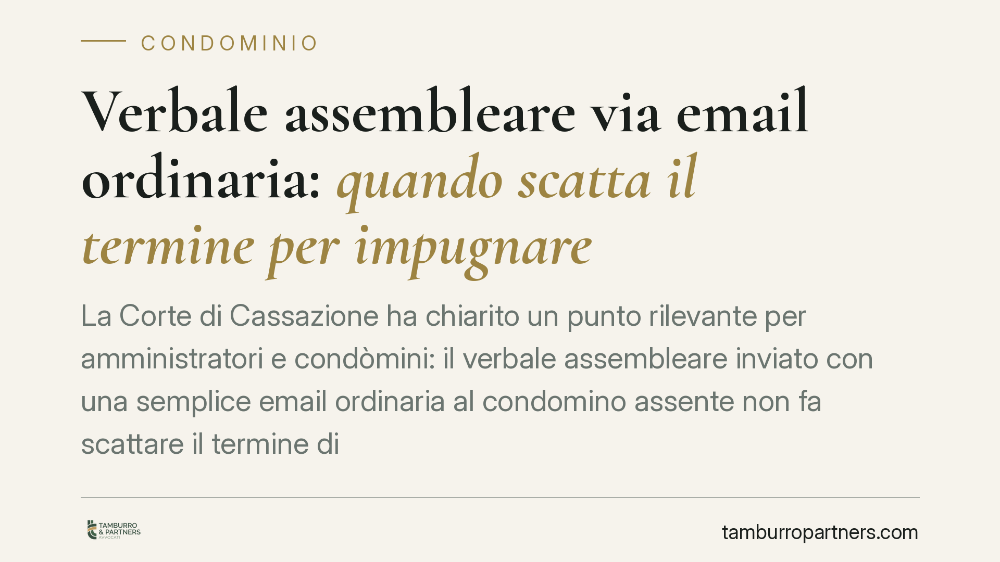

Verbale assembleare via email ordinaria: quando scatta il termine per impugnare
La Corte di Cassazione ha chiarito un punto rilevante per amministratori e condòmini: il verbale assembleare inviato con una semplice email ordinaria al condomino assente non fa scattare il termine di trenta giorni per impugnare la delibera. Solo strumenti che garantiscono certezza della ricezione producono questo effetto. Una precisazione con conseguenze pratiche immediate sulla gestione delle comunicazioni condominiali.

Il caso
Una condòmina assente all'assemblea riceveva il verbale della riunione tramite email ordinaria. Il condominio riteneva che da quell'invio decorresse il termine per contestare la delibera. La condòmina impugnava oltre i trenta giorni dalla ricezione dell'email, sostenendo che quella modalità non fosse idonea a far partire il conteggio. La Cassazione le ha dato ragione.
La questione non è di dettaglio. Ruota attorno a un principio semplice: perché un termine di decadenza inizi a correre, deve esserci certezza legale del momento in cui la comunicazione è giunta al destinatario.
Inquadramento normativo
L'art. 1137, comma 2, cod. civ. prevede che il condomino assente, dissenziente o astenuto possa impugnare le delibere assembleari contrarie alla legge o al regolamento entro trenta giorni. Per l'assente, il termine decorre dalla comunicazione della deliberazione; per il presente, dalla data dell'assemblea.
Il punto critico è cosa si intenda per "comunicazione". La norma non impone una forma specifica, ma la giurisprudenza richiede che lo strumento utilizzato consenta di provare, con ragionevole certezza, l'avvenuta ricezione e la data.
L'email ordinaria non offre questa garanzia. A differenza della posta elettronica certificata (PEC), non produce ricevute di consegna con valore legale equiparabile alla raccomandata (D.P.R. 68/2005 e Codice dell'amministrazione digitale, D.lgs. 82/2005). Un messaggio ordinario può finire nello spam, non essere consegnato, o non essere mai aperto, senza che il mittente ne abbia riscontro opponibile.
Da qui la conclusione della Corte: l'invio via email semplice non è idoneo a far decorrere il termine di decadenza previsto dall'art. 1137. Il condomino resta libero di impugnare finché non riceve una comunicazione con forma certa.
Implicazioni pratiche
Per l'amministratore, la pronuncia comporta un rischio gestionale concreto. Confidare nell'email ordinaria significa lasciare la porta aperta a impugnazioni tardive che, in realtà, tardive non sono. Una delibera che l'amministratore considera ormai stabilizzata potrebbe essere contestata mesi dopo, con effetti su lavori già avviati, spese deliberate e rapporti con i fornitori.
Per il condomino assente, invece, la sentenza è una tutela. Se ha ricevuto solo un'email ordinaria, il suo termine per impugnare non è ancora partito. Conserva quindi la possibilità di far valere le proprie ragioni davanti al giudice, purché ricorrano i presupposti dell'art. 1137 (violazione di legge o di regolamento).
Attenzione a una distinzione: la questione riguarda la decorrenza del termine di impugnazione, non la validità della delibera in sé. La delibera resta efficace finché non viene annullata. Ma la mancata comunicazione in forma certa impedisce di considerare definitivamente consolidato l'esito dell'assemblea nei confronti dell'assente.
Va inoltre ricordato che alcuni regolamenti condominiali disciplinano espressamente le modalità di comunicazione. Dove il regolamento consente l'uso della PEC o richiede la raccomandata, quelle previsioni vanno rispettate a prescindere.
Cosa fare in concreto
- Comunicate i verbali con strumenti a prova di ricezione. Utilizzate PEC o raccomandata A/R per l'invio ai condòmini assenti: sono le uniche forme che garantiscono certezza sulla data di consegna.
- Verificate il regolamento condominiale. Controllate se contiene clausole sulle modalità di comunicazione e adeguatevi, evitando forme non previste o meno garantite.
- Conservate le ricevute. Archiviate ricevute di consegna PEC e cartoline di ritorno delle raccomandate: sono la prova che fa decorrere il termine.
- Se siete condòmini assenti, verificate con quale mezzo vi è stato trasmesso il verbale prima di ritenere scaduto il vostro diritto di impugnare.
- In caso di dubbio sulla tempestività, consigliamo di richiedere una valutazione professionale prima di agire o di rinunciare all'impugnazione.
In sintesi
La comodità dell'email ordinaria non basta a produrre effetti giuridici in materia di termini di decadenza. Per far correre i trenta giorni dell'art. 1137, serve una comunicazione dotata di certezza legale. Una regola che protegge il condomino assente e impone all'amministratore rigore nella gestione delle comunicazioni.
---
*Contributo informativo a cura di Tamburro & Partners - Avv. Giuseppe Tamburro. Non costituisce parere legale.*
Ogni condominio ha una storia a sé.
Se gestisci un'amministrazione e vuoi un confronto su una specifica questione condominiale, scrivi allo studio. Ti rispondiamo entro un giorno lavorativo.